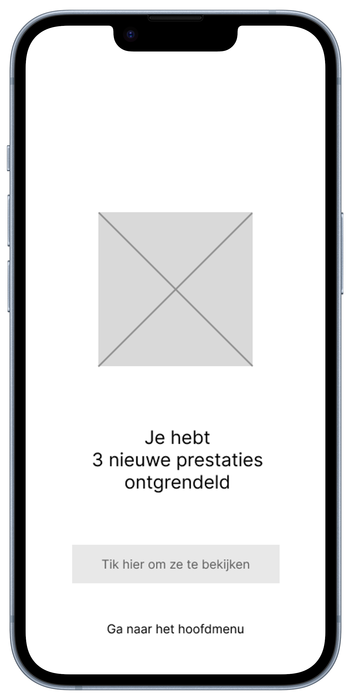
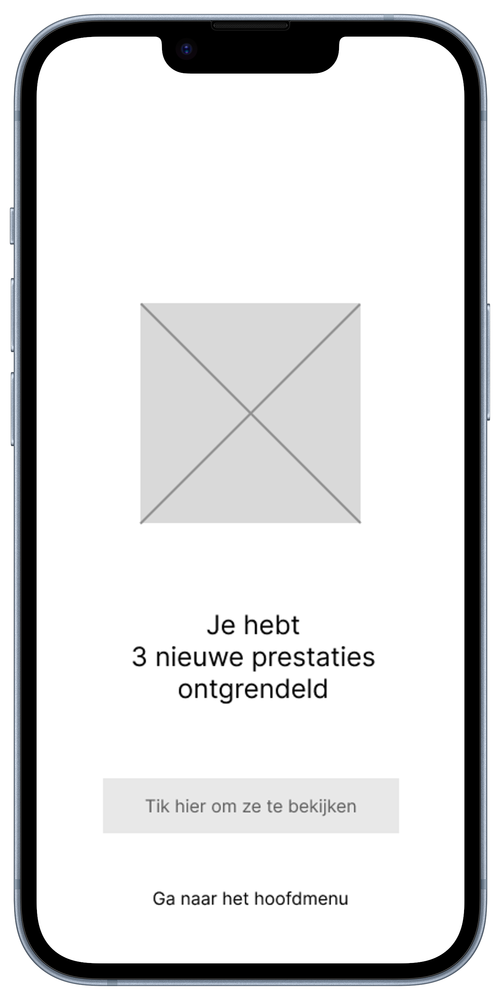
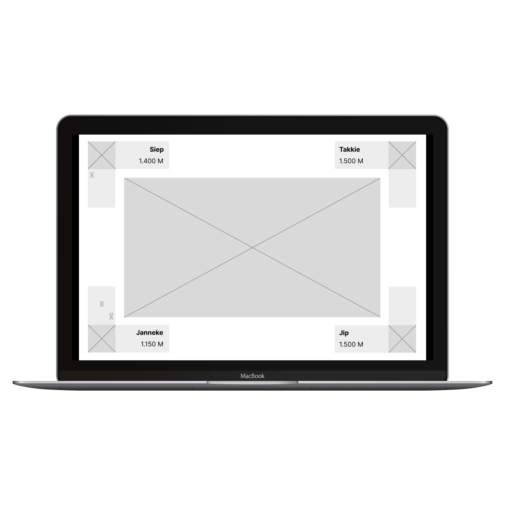
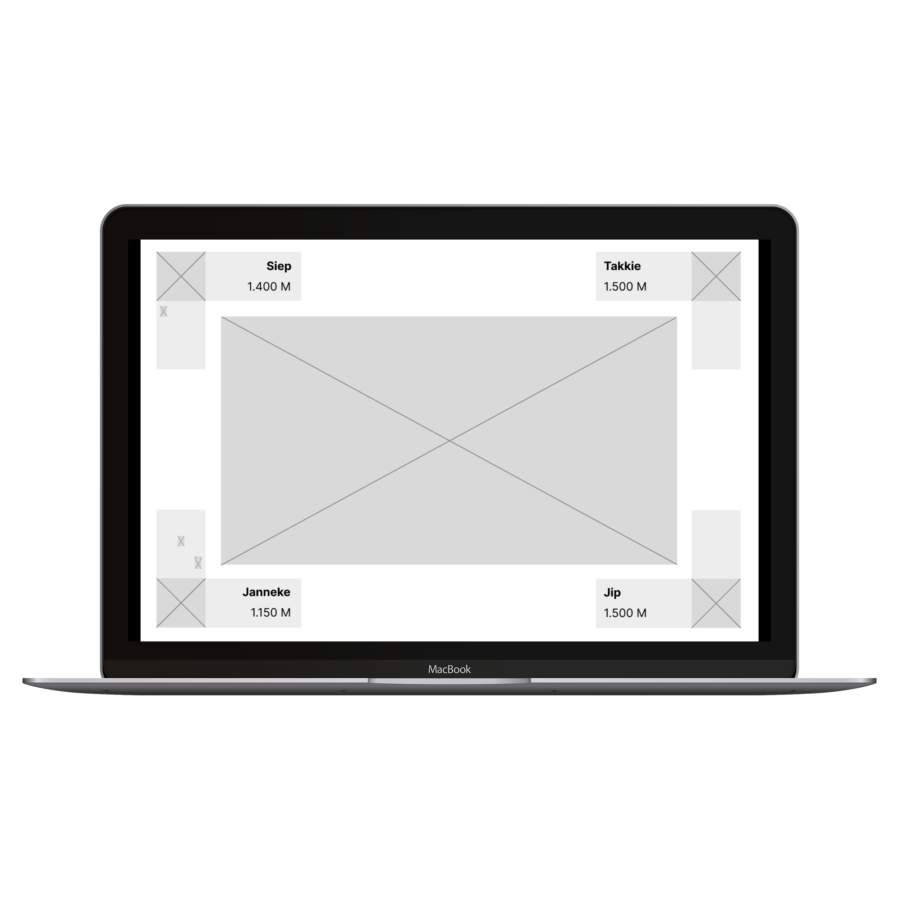

Vooraf
Jip heeft afgesproken bij Janneke met een paar vrienden. Ze vervelen zich een beetje en
besluiten om met z’n alle gezellig een spel te spelen. Janneke komt op het idee om ‘online’
monopoly te
spelen,
aangezien zij
het spel niet thuis heeft. De groep gaat aan tafel zitten en Janneke zet haar laptop op tafel.
Ze
opent
de app en laat iedereen op hun mobiel ook de app downloaden. Jip opent de app en logt in met de
code
die op
de laptop te zien is. Wanneer iedereen is ingelogd kan Janneke het spel starten.
Tijdens
Jip mag beginnen en rolt in de app een dobbelsteen. Op de laptop verplaats de pion van Jip 5
plaatsen
naar
voren. Jip koopt de straat waar hij op staat en de beurt gaat naar de volgende persoon. Zo
speelt
het
gezelschap een aantal rondjes. Op het moment dat Janneke weer aan de beurt is besluit zij een
straat
te
willen ruilen met Jip. Echter is Jip op het toilet, dus moet zij op hem wachten. Terwijl Jip op
het
toilet
is krijgt hij een melding op zijn smartwatch dat Janneke met hem wilt ruilen. Wanneer hij terug
is
in de
kamer accepteert hij de ruil met Janneke en ruilen ze de straten door hun mobieltjes tegen
elkaar
aan te
houden. Het spel gaat weer verder en de volgende speler is aan de beurt.
Achteraf
Wanneer het spel is afgelopen krijgen de spelers op de laptop te zien wie er gewonnen heeft. Het
is Jip! De rest van het gezelschap vind het jammer dat zij niet gewonnen hebben, maar zijn blij
om de leuke
tijd die ze met z’n allen gehad hebben. Jip ziet opeens in de app dat hij een medaille heeft
gehaald omdat
hij zijn eerste spel heeft gewonnen. Er zijn er nog meer om te behalen, dus Jip speelt graag nog
een
potje mee.


 

 
